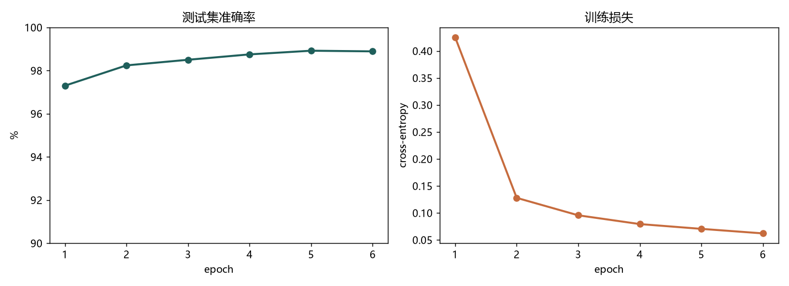
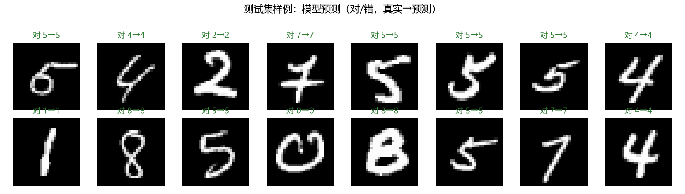
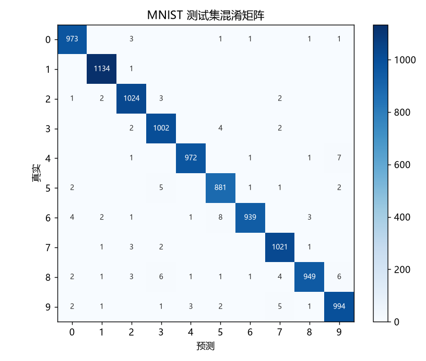

机器学习最经典的入门任务：看一张 28×28 的手写数字图，认出它是 0–9 里的哪个。 我用 PyTorch 写了一个小 CNN，在真实 MNIST（6 万训练 / 1 万测试）上端到端训练， 测试集准确率 98.9%。下面都是这次训练真实产出的图和数字。
在下面白板上用鼠标（或手指）写一个 0–9，点"识别"。浏览器里跑的就是上面那个训练好的 CNN——权重已导出到本地，不联网、不上传。画得尽量居中、笔画粗一点会更准。



这是我系统学 PyTorch 之后，第一个从头到尾跑通的视觉模型：数据管道（下载→解析→归一化→DataLoader）、 卷积网络、训练循环、评估与可视化，一整条走了一遍。
也借它理解了卷积为什么适合图像——局部感受野 + 权值共享，参数比全连接少很多，还自带一点平移不变性。 以及 Dropout、学习率、epoch 数这些细节对最终结果的影响。